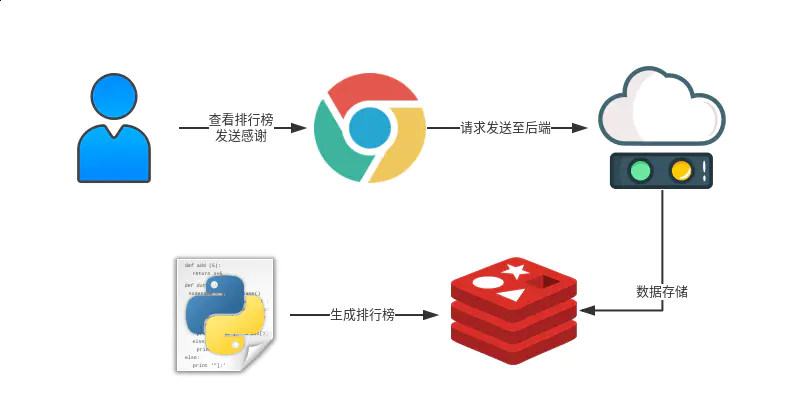

- 01 开篇： Kubernetes 是什么以及为什么需要它.md.html
- 02 初步认识：Kubernetes 基础概念.md.html
- 03 宏观认识：整体架构.md.html
- 04 搭建 Kubernetes 集群 - 本地快速搭建.md.html
- 05 动手实践：搭建一个 Kubernetes 集群 - 生产可用.md.html
- 06 集群管理：初识 kubectl.md.html
- 07 集群管理：以 Redis 为例-部署及访问.md.html
- 08 安全重点 认证和授权.md.html
- 09 应用发布：部署实际项目.md.html
- 10 应用管理：初识 Helm.md.html
- 11 部署实践：以 Helm 部署项目.md.html
- 12 庖丁解牛：kube-apiserver.md.html
- 13 庖丁解牛：etcd.md.html
- 14 庖丁解牛：controller-manager.md.html
- 15 庖丁解牛：kube-scheduler.md.html
- 16 庖丁解牛：kubelet.md.html
- 17 庖丁解牛：kube-proxy.md.html
- 18 庖丁解牛：Container Runtime （Docker）.md.html
- 19 Troubleshoot.md.html
- 20 扩展增强：Dashboard.md.html
- 21 扩展增强：CoreDNS.md.html
- 22 服务增强：Ingress.md.html
- 23 监控实践：对 K8S 集群进行监控.md.html
- 24 总结.md.html
- 捐赠
09 应用发布：部署实际项目
本节我们开始学习如何将实际项目部署至 K8S 中，开启生产实践之路。
整体概览
本节所用示例项目是一个混合了 Go，NodeJS，Python 等语言的项目，灵感来自于知名程序员 Kenneth Reitz 的 Say Thanks 项目。本项目实现的功能主要有两个：1. 用户通过前端发送感谢消息 2. 有个工作进程会持续的计算收到感谢消息的排行榜。项目代码可在 GitHub 上获得。接下来几节中如果需要用到此项目我会统一称之为 saythx 项目。
saythx 项目的基础结构如下图：

构建镜像
前端
我们使用了前端框架 Vue，所以在做生产部署时，需要先在 Node JS 的环境下进行打包构建。包管理器使用的是 Yarn。然后使用 Nginx 提供服务，并进行反向代理，将请求正确的代理至后端。
FROM node:10.13 as builder
WORKDIR /app
COPY . /app
RUN yarn install \
&& yarn build
FROM nginx:1.15
COPY nginx.conf /etc/nginx/conf.d/default.conf
COPY --from=builder /app/dist /usr/share/nginx/html/
EXPOSE 80
Nginx 的配置文件如下：
upstream backend-up {
server saythx-backend:8080;
}
server {
listen 80;
server_name localhost;
charset utf-8;
location / {
root /usr/share/nginx/html;
try_files $uri $uri/ /index.html;
}
location ~ ^/(api) {
proxy_pass http://backend-up;
}
}
将 API 的请求反向代理到后端服务上。其余请求全部留给前端进行处理。
后端
后端是使用 Golang 编写的 API 服务，对请求进行相应处理，并将数据存储至 Redis 当中。依赖管理使用的是 dep。由于 Golang 是编译型语言，编译完成后会生成一个二进制文件，为了让镜像尽可能小，所以 Dockerfile 和前端的差不多，都使用了多阶段构建的特性。
FROM golang:1.11.1 as builder
WORKDIR /go/src/be
COPY . /go/src/be
RUN go get -u github.com/golang/dep/cmd/dep \
&& dep ensure \
&& go build
FROM debian:stretch-slim
COPY --from=builder /go/src/be/be /usr/bin/be
ENTRYPOINT ["/usr/bin/be"]
EXPOSE 8080
注意这里会暴露出来后端服务所监听的端口。
Work
Work 端使用的是 Python，用于计算已经存储至 Redis 当中的数据，并生成排行榜。依赖使用 pip 进行安装。对于 Python 的镜像选择，我做了一组性能对比的测试 有兴趣可以了解下。
FROM python:3.7-slim
WORKDIR /app
COPY . /app
RUN pip install -r requirements.txt
ENTRYPOINT ["python", "work.py"]
构建发布
接下来，我们只要在对应项目目录中，执行 docker build [OPTIONS] PATH 即可。一般我们会使用 -t name:tag 的方式打 tag。
# 以下分别是在各模块自己的目录内
➜ be docker build -t taobeier/saythx-be .
➜ fe docker build -t taobeier/saythx-fe .
➜ work docker build -t taobeier/saythx-work .
需要注意的是，前端项目由于目录内包含开发时的 node_modules 等文件，需要注意添加 .dockerignore 文件，忽略一些非预期的文件。关于 Docker 的 build 原理，有想深入理解的，可参考我之前写的 Docker 深入篇之 Build 原理 。 当镜像构建完成后，我们需要将它们发布至镜像仓库。这里我们直接使用官方的 Docker Hub，执行 docker login 输入用户名密码验证成功后便可进行发布（需要先去 Docker Hub 注册帐号）。
登录成功后，默认情况下在 $HOME/.docker/config.json 中会存储用户相关凭证。
接下来进行发布只需要执行 docker push 即可。
➜ ~ docker push taobeier/saythx-be
➜ ~ docker push taobeier/saythx-fe
➜ ~ docker push taobeier/saythx-work
容器编排 Docker Compose
Docker Compose 是一种较为简单的可进行容器编排的技术，需要创建一个配置文件，通常情况下为 docker-compose.yml 。在 saythx 项目的根目录下我已经创建好了 docker-compose.yml 的配置文件。
version: '3'
services:
saythx-frontend:
build:
context: fe/.
image: taobeier/saythx-fe
ports:
- "8088:80"
depends_on:
- saythx-backend
networks:
- saythx
saythx-backend:
build:
context: be/.
image: taobeier/saythx-be
depends_on:
- saythx-redis
networks:
- saythx
environment:
- REDIS_HOST=saythx-redis
saythx-work:
build:
context: work/.
image: taobeier/saythx-work
depends_on:
- saythx-redis
networks:
- saythx
environment:
- REDIS_HOST=saythx-redis
- REDIS_PORT=6379
saythx-redis:
image: "redis:5"
networks:
- saythx
networks:
saythx:
在项目的根目录下执行 docker-compose up 即可启动该项目。在浏览器中访问 http://127.0.0.1:8088/ 即可看到项目的前端界面。如下图：

打开另外的终端，进入项目根目录内，执行 docker-compose ps 命令即可看到当前的服务情况。
➜ saythx git:(master) ✗ docker-compose ps
Name Command State Ports
----------------------------------------------------------------------------------------
saythx_saythx-backend_1 /usr/bin/be Up 8080/tcp
saythx_saythx-frontend_1 nginx -g daemon off; Up 0.0.0.0:8088->80/tcp
saythx_saythx-redis_1 docker-entrypoint.sh redis ... Up 6379/tcp
saythx_saythx-work_1 python work.py Up
可以看到各组件均是 Up 的状态，相关端口也已经暴露出来。
可在浏览器直接访问体验。由于 Docker Compose 并非本册的重点，故不做太多介绍，可参考官方文档进行学习。接下来进入本节的重点内容，将项目部署至 K8S 中。
编写配置文件并部署
在 K8S 中进行部署或者说与 K8S 交互的方式主要有三种：
- 命令式
- 命令式对象配置
- 声明式对象配置
第 7 节介绍过的 kubectl run redis --image='redis:alpine' 这种方式便是命令式，这种方式很简单，但是可重用性低。毕竟你的命令执行完后，其他人也并不清楚到底发生了什么。
命令式对象配置，主要是编写配置文件，但是通过类似 kubectl create 之类命令式的方式进行操作。
再有一种便是声明式对象配置，主要也是通过编写配置文件，但是使用 kubectl apply 之类的放好似进行操作。与第二种命令式对象配置的区别主要在于对对象的操作将会得到保留。但同时这种方式有时候也并不好进行调试。
接下来，为 saythx 项目编写配置文件，让它可以部署至 K8S 中。当然，这里我们已经创建过了 docker-compose.yml 的配置文件，并且也验证了其可用性，可以直接使用 Kompose 工具将 docker-compose.yml 的配置文件进行转换。
但这里采用直接编写的方式。同时，我们部署至一个新的名为 work 的 Namespace 中。
Namespace
apiVersion: v1
kind: Namespace
metadata:
name: work
指定了 Namespace name 为 work。然后进行部署
➜ conf git:(master) ✗ kubectl apply -f namespace.yaml
namespace/work created
Redis 资源
从前面的 docker-compose.yml 中也能发现，saythx 中各个组件，只有 Redis 是无任何依赖的。我们先对它进行部署。
apiVersion: apps/v1
kind: Deployment
metadata:
labels:
app: redis
name: saythx-redis
namespace: work
spec:
selector:
matchLabels:
app: redis
replicas: 1
template:
metadata:
labels:
app: redis
spec:
containers:
- image: redis:5
name: redis
ports:
- containerPort: 6379
由于这是本册内第一次出现完整的 Deployment 配置文件，故而进行重点介绍。
apiVersion：指定了 API 的版本号，当前我们使用的 K8S 中，Deployment的版本号为apps/v1，而在 1.9 之前使用的版本则为apps/v1beta2，在 1.8 之前的版本使用的版本为extensions/v1beta1。在编写配置文件时需要格外注意。kind：指定了资源的类型。这里指定为Deployment说明是一次部署。metadata：指定了资源的元信息。例如其中的name和namespace分别表示资源名称和所归属的Namespace。spec：指定了对资源的配置信息。例如其中的replicas指定了副本数当前指定为 1 。template.spec则指定了Pod中容器的配置信息，这里的Pod中只部署了一个容器。
配置文件已经生产，现在对它进行部署。
➜ conf git:(master) ✗ kubectl -n work get all
No resources found.
➜ conf git:(master) ✗ kubectl apply -f redis-deployment.yaml
deployment.apps/saythx-redis created
➜ conf git:(master) ✗ kubectl -n work get all
NAME READY STATUS RESTARTS AGE
pod/saythx-redis-79d8f9864d-x8fp9 1/1 Running 0 4s
NAME DESIRED CURRENT UP-TO-DATE AVAILABLE AGE
deployment.apps/saythx-redis 1 1 1 1 4s
NAME DESIRED CURRENT READY AGE
replicaset.apps/saythx-redis-79d8f9864d 1 1 1 4s
可以看到 Pod 已经在正常运行了。我们进入 Pod 内进行测试。
➜ conf git:(master) ✗ kubectl -n work exec -it saythx-redis-79d8f9864d-x8fp9 bash
root@saythx-redis-79d8f9864d-x8fp9:/data# redis-cli
127.0.0.1:6379> ping
PONG
响应正常。
Redis service
由于 Redis 是后端服务的依赖，我们将它作为 Service 暴露出来。
apiVersion: v1
kind: Service
metadata:
labels:
app: redis
name: saythx-redis
namespace: work
spec:
ports:
- protocol: TCP
port: 6379
targetPort: 6379
selector:
app: redis
type: NodePort
关于 Service 的内容，可参考第 7 节，我们详细做过解释。这里直接使用配置文件进行部署。
➜ conf git:(master) ✗ kubectl apply -f redis-service.yaml
service/saythx-redis created
➜ conf git:(master) ✗ kubectl get svc -n work
NAME TYPE CLUSTER-IP EXTERNAL-IP PORT(S) AGE
saythx-redis NodePort 10.107.31.242 <none> 6379:31467/TCP 1m
后端服务
接下来，我们对后端服务进行部署。
apiVersion: apps/v1
kind: Deployment
metadata:
labels:
app: backend
name: saythx-backend
namespace: work
spec:
selector:
matchLabels:
app: backend
replicas: 1
template:
metadata:
labels:
app: backend
spec:
containers:
- env:
- name: REDIS_HOST
value: saythx-redis
image: taobeier/saythx-be
name: backend
ports:
- containerPort: 8080
可以看到这里通过环境变量的方式，将 REDIS_HOST 传递给了后端服务。
➜ conf git:(master) ✗ kubectl apply -f backend-deployment.yaml
deployment.apps/saythx-backend created
➜ conf git:(master) ✗ kubectl -n work get all
NAME READY STATUS RESTARTS AGE
pod/saythx-backend-c5f9f6d95-lmtxn 0/1 ContainerCreating 0 5s
pod/saythx-redis-8558c7d7d-kcmzk 1/1 Running 0 17m
NAME TYPE CLUSTER-IP EXTERNAL-IP PORT(S) AGE
service/saythx-redis NodePort 10.107.31.242 <none> 6379:31467/TCP 1m
NAME DESIRED CURRENT UP-TO-DATE AVAILABLE AGE
deployment.apps/saythx-backend 1 1 1 0 5s
deployment.apps/saythx-redis 1 1 1 1 17m
NAME DESIRED CURRENT READY AGE
replicaset.apps/saythx-backend-c5f9f6d95 1 1 0 5s
replicaset.apps/saythx-redis-8558c7d7d 1 1 1 17m
后端 Service
后端服务是前端项目的依赖，故而我们也将其作为 Service 暴露出来。
apiVersion: v1
kind: Service
metadata:
labels:
app: backend
name: saythx-backend
namespace: work
spec:
ports:
- protocol: TCP
port: 8080
targetPort: 8080
selector:
app: backend
type: NodePort
通过配置文件进行部署。
➜ conf git:(master) ✗ kubectl apply -f backend-service.yaml
service/saythx-backend created
➜ conf git:(master) ✗ kubectl get svc -n work
NAME TYPE CLUSTER-IP EXTERNAL-IP PORT(S) AGE
service/saythx-backend NodePort 10.104.0.47 <none> 8080:32051/TCP 8s
service/saythx-redis NodePort 10.107.31.242 <none> 6379:31467/TCP 3m
我们同样使用 NodePort 将其暴露出来，并在本地进行测试。
➜ conf git:(master) ✗ curl http://127.0.0.1:32051/api/v1/list
{"HonorDatas":null}
服务可正常响应。
前端
接下来我们编写前端的配置文件。
apiVersion: apps/v1
kind: Deployment
metadata:
labels:
app: frontend
name: saythx-frontend
namespace: work
spec:
selector:
matchLabels:
app: frontend
template:
metadata:
labels:
app: frontend
spec:
containers:
- image: taobeier/saythx-fe
name: frontend
ports:
- containerPort: 80
需要注意的是，我们必须在后端 Service 暴露出来后才能进行前端的部署，因为前端镜像中 Nginx 的反向代理配置中会去检查后端是否可达。使用配置文件进行部署。
➜ conf git:(master) ✗ kubectl apply -f frontend-deployment.yaml
deployment.apps/saythx-frontend created
➜ conf git:(master) ✗ kubectl -n work get all
NAME READY STATUS RESTARTS AGE
pod/saythx-backend-c5f9f6d95-lmtxn 1/1 Running 0 16m
pod/saythx-frontend-678d544b86-wp9gr 1/1 Running 0 30s
pod/saythx-redis-8558c7d7d-kcmzk 1/1 Running 0 34m
NAME TYPE CLUSTER-IP EXTERNAL-IP PORT(S) AGE
service/saythx-backend NodePort 10.104.0.47 <none> 8080:32051/TCP 15m
service/saythx-redis NodePort 10.107.31.242 <none> 6379:31467/TCP 18m
NAME DESIRED CURRENT UP-TO-DATE AVAILABLE AGE
deployment.apps/saythx-backend 1 1 1 1 16m
deployment.apps/saythx-frontend 1 1 1 1 30s
deployment.apps/saythx-redis 1 1 1 1 34m
NAME DESIRED CURRENT READY AGE
replicaset.apps/saythx-backend-c5f9f6d95 1 1 1 16m
replicaset.apps/saythx-frontend-678d544b86 1 1 1 30s
replicaset.apps/saythx-redis-8558c7d7d 1 1 1 34m
前端 Service
接下来，我们需要让前端可以被直接访问到，同样的需要将它以 Service 的形式暴露出来。
apiVersion: v1
kind: Service
metadata:
labels:
app: frontend
name: saythx-frontend
namespace: work
spec:
ports:
- name: "80"
port: 80
targetPort: 80
selector:
app: frontend
type: NodePort
创建 Service 。
➜ conf git:(master) ✗ kubectl apply -f frontend-service.yaml
service/saythx-frontend created
➜ conf git:(master) ✗ kubectl -n work get svc
NAME TYPE CLUSTER-IP EXTERNAL-IP PORT(S) AGE
saythx-backend NodePort 10.104.0.47 <none> 8080:32051/TCP 17m
saythx-frontend NodePort 10.96.221.71 <none> 80:32682/TCP 11s
saythx-redis NodePort 10.107.31.242 <none> 6379:31467/TCP 20m
我们可以直接通过 Node 的 32682 端口进行访问。
Work
最后，是我们的 Work 组件，为它编写配置文件。
apiVersion: apps/v1
kind: Deployment
metadata:
labels:
app: work
name: saythx-work
namespace: work
spec:
selector:
matchLabels:
app: work
replicas: 1
template:
metadata:
labels:
app: work
spec:
containers:
- env:
- name: REDIS_HOST
value: saythx-redis
- name: REDIS_PORT
value: "6379"
image: taobeier/saythx-work
name: work
同样的，我们通过环境变量的方式传递了 Redis 相关的配置进去。
➜ conf git:(master) ✗ kubectl apply -f work-deployment.yaml
deployment.apps/saythx-work created
➜ conf git:(master) ✗ kubectl -n work get all
NAME READY STATUS RESTARTS AGE
pod/saythx-backend-c5f9f6d95-lmtxn 1/1 Running 0 22m
pod/saythx-frontend-678d544b86-wp9gr 1/1 Running 0 5m
pod/saythx-redis-8558c7d7d-kcmzk 1/1 Running 0 39m
pod/saythx-work-6b9958dc47-hh9td 0/1 ContainerCreating 0 7s
NAME TYPE CLUSTER-IP EXTERNAL-IP PORT(S) AGE
service/saythx-backend NodePort 10.104.0.47 <none> 8080:32051/TCP 20m
service/saythx-frontend NodePort 10.96.221.71 <none> 80:32682/TCP 3m
service/saythx-redis NodePort 10.107.31.242 <none> 6379:31467/TCP 23m
NAME DESIRED CURRENT UP-TO-DATE AVAILABLE AGE
deployment.apps/saythx-backend 1 1 1 1 22m
deployment.apps/saythx-frontend 1 1 1 1 5m
deployment.apps/saythx-redis 1 1 1 1 39m
deployment.apps/saythx-work 1 1 1 0 7s
NAME DESIRED CURRENT READY AGE
replicaset.apps/saythx-backend-c5f9f6d95 1 1 1 22m
replicaset.apps/saythx-frontend-678d544b86 1 1 1 5m
replicaset.apps/saythx-redis-8558c7d7d 1 1 1 39m
replicaset.apps/saythx-work-6b9958dc47 1 1 0 7s
现在均已经部署完成。并且可直接通过 Node 端口进行访问。
扩缩容
如果我们觉得排行榜生成效率较低，则可通过扩容 Work 来得到解决。具体做法是可修改 work 的 Deployment 配置文件，将 spec.replicas 设置为预期的数值，之后执行 kubectl -f work-deployment.yaml 即可。
或者可直接通过命令行进行操作
➜ conf git:(master) ✗ kubectl -n work scale --replicas=2 deployment/saythx-work
上面的命令是将 saythx-work 的部署副本数设置为 2 。缩容也差不多是类似的操作。
总结
通过本节的学习，我们已经学习到了如何将项目实际部署至 K8S 中，可以手动编写配置也可以利用一些工具进行辅助。同时也了解到了如何应对应用的扩缩容。
但如果应用需要进行升级的话，则需要去更改配置文件中相关的配置，这个过程会较为繁琐，并且整体项目线上的版本管理也是个问题：比如组件的个人升级，回滚之间如果有依赖的话，会比较麻烦。我们在接下来的两节来学习如何解决这个问题。
© 2019 - 2023 Liangliang Lee. Powered by gin and hexo-theme-book.